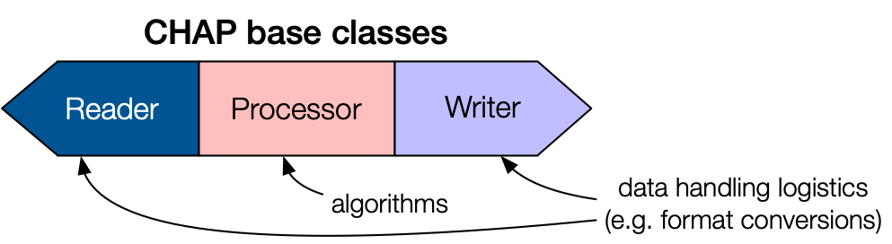
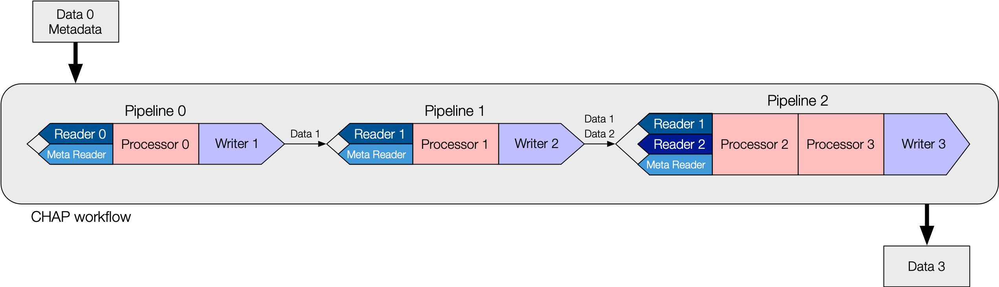

Introduction
The CHESS Analysis Pipeline (CHAP) is an object-oriented python framework for refactoring monolithic data
analysis programs into modular pipelines composed of interchangeable, reusable code components. The basic
blueprint for a Pipeline consists of a Reader, Processor, and Writer, as shown in the diagram below:

The basic blueprint of a CHAP pipeline component.
The Reader and Writer handle data input and output for the Pipeline. These base classes encapsulate
the CHESS-specific logistics, such as file operations and data format conversions. Inherited subclasses are
defined for specific file types, e.g. H5Reader, NexusWriter. A Pipeline can be constructed with
multiple Readers or Writers.
The Processor base class encapsulates the data analysis algorithm. Because Processors are independent of
CHESS infrastructure, researchers who are unfamiliar with CHESS can easily contribute Processor subclasses
with custom code for data analysis. Data is passed into and out of a Processor via PipelineData containers.
Multiple Processors can be chained together within a single Pipeline.
Workflows are defined by CHAP configuration files written in YAML. Each file may contain one or more
Pipelines that can be executed individually or all at once (sequentially). The diagram below shows
a schematic workflow with series of Pipelines linked together in a single configuration file.

The basic blueprint of a CHAP workflow.
Workflows for specific X-ray techniques are constructed from concrete implementations of the CHAP base classes.
For example, in the EDD workflow example pipeline file,
“energy” is for energy calibration with “Processor 0” being edd.MCAEnergyCalibrationProcessor,
“twotheta” is for detector theta calibration with “Processor 1” being edd.MCATthCalibrationProcessor, and so on.